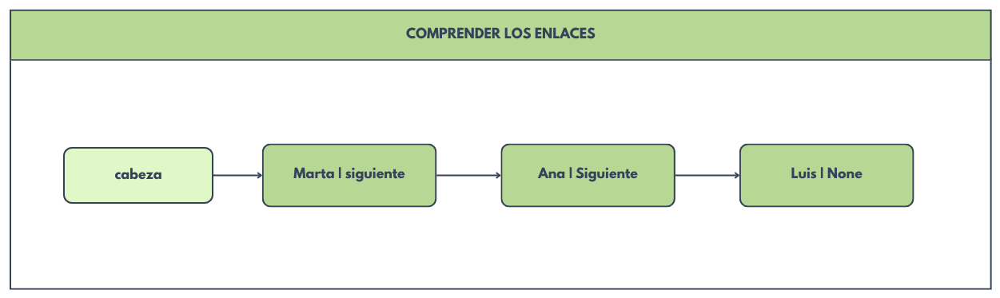
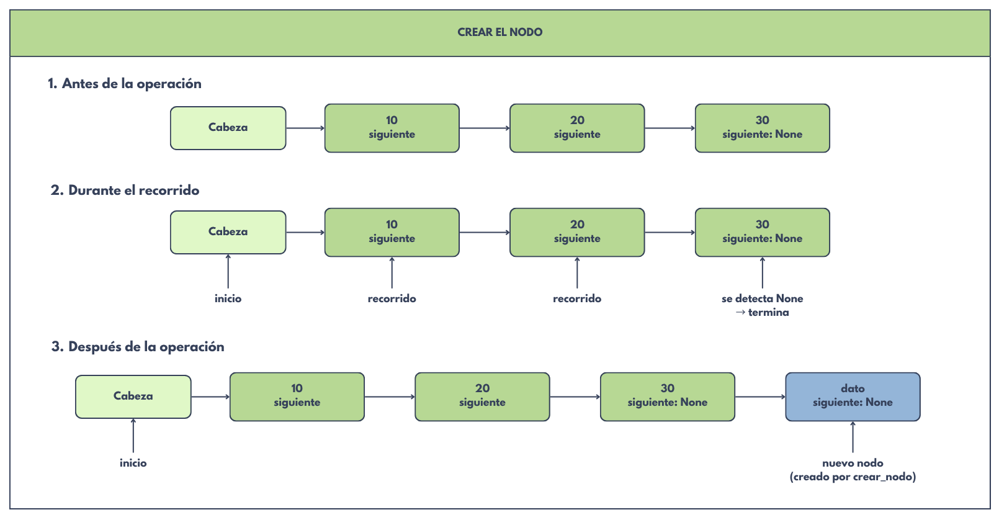
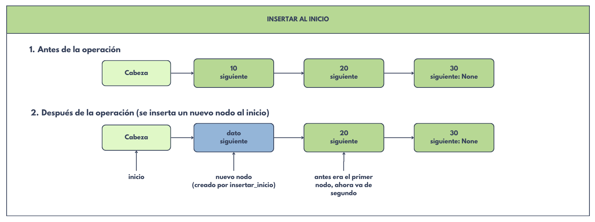
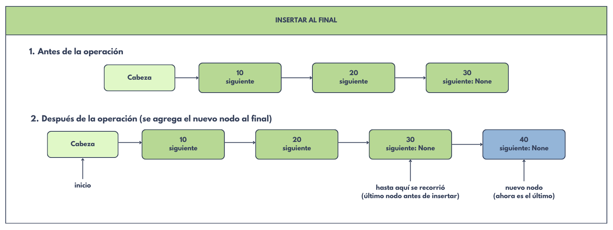

Una lista enlazada conecta nodos mediante referencias.

Los diccionarios representan nodos y sus valores guardan referencias a otros diccionarios. Python administra la memoria: aquí no manipulamos direcciones manualmente.
Una
Crea el
def crear_nodo(dato):
return {"dato": dato, "siguiente": None}
Primero conecta el nuevo nodo con la cabeza anterior; después devuelve la nueva cabeza. El orden evita perder el acceso al resto de la lista.
def insertar_inicio(cabeza, dato):
nuevo = crear_nodo(dato)
nuevo["siguiente"] = cabeza
return nuevo
Si está vacía, el nuevo nodo pasa a ser la cabeza. Si tiene elementos, avanza hasta el último nodo y conecta el nuevo.
def insertar_final(cabeza, dato):
nuevo = crear_nodo(dato)
if cabeza is None:
return nuevo
actual = cabeza
while actual["siguiente"] is not None:
actual = actual["siguiente"]
actual["siguiente"] = nuevo
return cabeza
La variable auxiliar
Recorre desde la posición 0. Devuelve la primera posición encontrada o -1 si el nombre no existe.
Distingue lista vacía, eliminación de la cabeza y eliminación de otro nodo. Devuelve una tupla: nueva cabeza y confirmación. Reenlazar el anterior con el siguiente excluye al nodo eliminado.
Cuenta recorriendo la estructura. No usa un contador global que pueda quedar desactualizado.